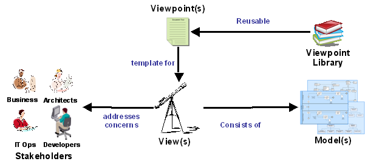

OUM |
Task Overview |
||
Method Navigation |
Current Page Navigation |
||
|
|
||||||||
The purpose of this task is to review the Viewpoint Library for relevant viewpoints to reuse for your project, and define all the views you will need for various tasks during your project. This is based on the type of stakeholders that will be involved in these tasks, their concerns and the objectives of the tasks. You typically define views for the tasks where there are high risk project stakeholder concerns.
Note: Review the definitions of the terms: viewpoint, architectural view, model and concern in the OUM Definitions and Terms before executing this task.
Viewpoint modeling is commonly used in other more mature engineering disciplines outside of IT. For example:
Although an IT project is, to a large part, defined by its requirements and technology used, the main determining factor of what makes a project different from another is people. The entire process of software development, service engineering, and operations management is strongly stakeholder influenced. By carrying out this stakeholder analysis before implementing a project, stakeholders such as architects and project managers can detect and act to prevent potential misunderstandings.
Viewpoint modeling is commonly used in other more mature engineering disciplines outside of IT. For example:
Although an IT project is, to a large part, defined by its requirements and technology used, the main determining factor of what makes a project different from another is people. The entire process of software development, service engineering, and operations management is strongly stakeholder influenced. By carrying out this stakeholder analysis before implementing a project, stakeholders such as architects and project managers can detect and act to prevent potential misunderstandings.
Within a single project, it is not expected that every possible viewpoint available will be needed. So a solution architect will need to make critical decisions such as:
The type and scale of the project and the complexity of the concerns, dictates how much time at any stage of the project lifecycle, should be devoted to this task. For this reason the identified stakeholders are prioritized against pre-selected criteria to assist in narrowing down which stakeholders and viewpoints to select and develop.
Although viewpoint modeling is required at an early stage in the project lifecycle to allow the stakeholder analysis process to proceed, it is emphasized that verification and possible revision of the list of viewpoints included should be kept in mind throughout the project lifecycle, otherwise the viewpoints may become obsolete.
Situations may arise that could affect the viability of the viewpoints. Examples of these situations are:
A.ACT.GBRI Gather Business Requirements - Inception
Viewpoint List
The work product contains all the viewpoints, selected from the Viewpoint Library that should be used for the various modeling activities in your project. It also contains a definition of ad hoc project views to address concerns that are not addressed in any of the existing viewpoints.
You should follow these steps:
No. |
Task Step | Component | Component Description |
|---|---|---|---|
1 |
Review Viewpoint Library for relevant viewpoints. | None | |
2 |
Evaluate stakeholder concerns against Viewpoint Library. | None | |
3 |
Select viewpoints for reuse. | Reuse Viewpoint List | The Reuse Viewpoint List contains all the viewpoints that will be reused in the project with or without any project modifications. For each viewpoint it is indicated which stakeholder concerns should be covered by the viewpoint. There may be multiple viewpoints addressing the concerns of a single stakeholder, and one viewpoint may address concerns of multiple stakeholders. |
4 |
Determine ad hoc views. | Ad Hoc View Definitions | The Ad Hoc View Definitions contain a definition of every view that is needed for the project where there were no viewpoints to reuse from. The view definition contains a name of the view, for which purpose they should be used, and the stakeholders concerns that it should address. |
5 |
Define Additional Views to Address Project Concerns | Reuse Viewpoint List and Ad Hoc View Definitions | These components are an addition to the reused viewpoints or ad hoc views but addressing any additional project-specific concerns not covered by stakeholder concerns. |
A Viewpoint Library that is kept at enterprise level contains reusable viewpoints that can be used for any project that should be executed within the enterprise. Each viewpoint should be classified in a way that makes it easier to determine whether there are any reuse candidates at a project startup. This is typically classified against a domain or project type.

A viewpoint is a set of standards that is used to create one or more views that addresses one or more stakeholders concerns. A view is specific for a project, and consists of a number of models.
For example, if the viewpoint determines the standards (i.e., the notations) to be used for the process models, then a view based on this viewpoint is a set of process models produced using this notation, and addressing the concerns of one or more stakeholders (if they have the same collection of concerns). For example, if the stakeholders are Human Resources stakeholders, the view is the Human Resources processes, and the models belonging to that are all the process models that cover the Human Resources processes.
Review the Viewpoint Library to determine whether the project is similar to any past projects. If so, review the associated viewpoints for possible reuse in the current project.
Review the Project Stakeholder Analysis (PJM.CMM.010) to understand the stakeholder concerns and how they are prioritized. Use the viewpoint classification scheme to assist with searching the domain Viewpoint Library for appropriate viewpoints for each stakeholder.
When doing this, you may have the following situations for one stakeholder:
If there is an exact match to one or more existing viewpoints that address the concerns of one ore more stakeholders, include them in the Reuse Viewpoint List so that they can be used to create views for the project.
If there is a partial match between the stakeholder concerns and a viewpoint found in the Viewpoint Library, then do one of the following:
Include these in the Reuse Viewpoint List and stipulate what should be used from each viewpoint. If the view is expanded, indicate what areas should be expanded.
If there is no match between the stakeholder concerns and a viewpoint found in the domain Viewpoint Library, then define an ad hoc view for the project.
If there are any unique/specific project concerns that can be addressed by a view, then do one of the following:
This task involves the following method roles:
Role |
Responsibility |
% |
|---|---|---|
Enterprise Architect |
Identify high risk project concerns that can be addressed with the selected viewpoints. | 100 |
Project Manager |
Assist the enterprise architect by Identifing the viewpoints that address those concerns. | minimal |
* Participation level not estimated.
You need the following for this task:
Prerequisite |
Usage |
|---|---|
Project Stakeholder Analysis (PJM.CMM.010) |
Use the Project Stakeholder Analysis to determine what kind of viewpoints would be the most effective for the different types of stakeholders. |
Enterprise Modeling Strategy (ENV.ER.070) |
If available, use the Viewpoint Library that is created has part of this task. The Viewpoint Library contains all the viewpoints that should be considered. |
There are currently no templates available to assist with this task.
The Viewpoint List is used in the following ways:
Distribute the Viewpoint List as follows:
Use the following criteria to check the quality of this work product:

Copyright © 2006, 2016, Oracle and/or its affiliates. All rights reserved.